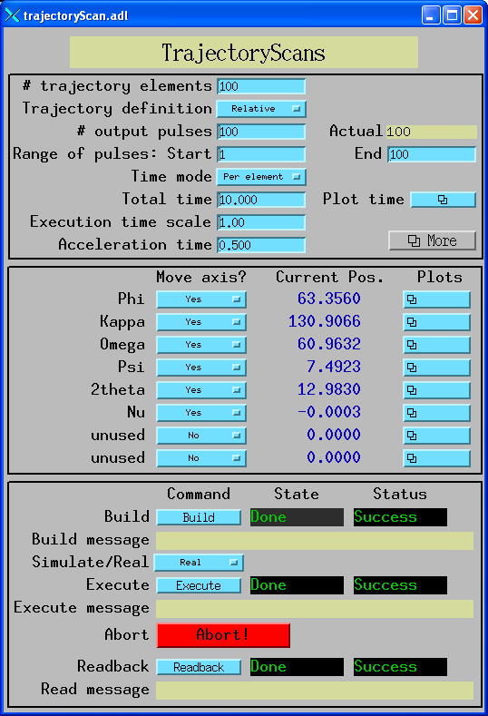
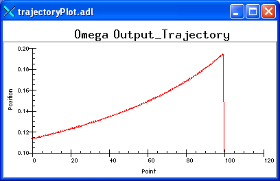
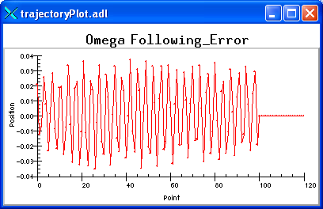
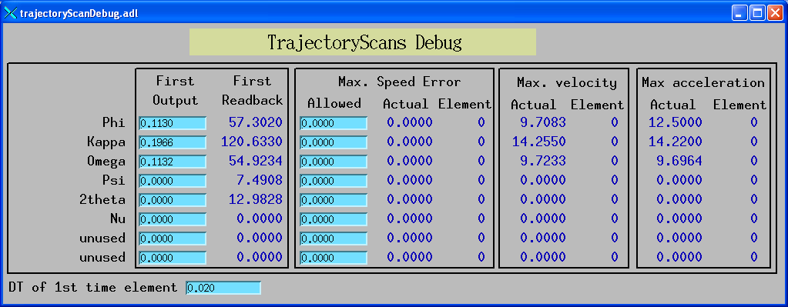

The Newport MM4005 and XPS motor controllers are capable of executing complex coordinated motions. Trajectories can be defined that move any or all of the axes through any set of complex motions. The controller will coordinate these motions, keeping each axis very close to the theoretical position during the entire motion. The controller can output logic pulses during the execution of the trajectory, permitting external equipment to be synchronized to the motion. These capabilities are ideally suited to “on-the-fly” data collection.
At the APS one application of the MM4005 and XPS is to drive the large Newport diffractometer. This diffractometer has rather long settling times because of the mass of the moving elements. However, with this trajectory scanning software one can use SPEC, for example, to compute a set of diffractometer positions for a scan in HKL space, and then download these positions to the controller. The entire scan can be executed without stopping, collecting data in a multi-channel scaler or other triggered buffering detector. This can reduce data collection times dramatically relative to traditional step scanning.
This document describes an EPICS interface to the trajectory capabilities of the MM4005 and XPS. This interface is completely general for the controllers, it is not specific to the Newport diffractometer. The interface lets any EPICS channel access client do the following:
The EPICS implementation consists of the following:
trajectoryScan.db. This database
contains almost no "logic" with no links between records in the database. The
records are simply variables that channel access clients and the State
Notation Language (SNL) program use.
MM4005_trajectoryScan.st and XPS_trajectoryScan.st.
. These programs implement all of the logic for communicating with
the controller and with channel access clients via the database.
trajectoryScan.adl,
trajectoryScanDebug.adl, trajectoryPlot.adl. These screens are
used to control the building, execution, readback, debugging and plotting of
trajectory scans.
The MM4005 and XPS are used at the APS to control the large Newport diffractometer. This device is capable of moving large masses at high speeds. The trajectory scanning software does not use the EPICS motor record, and so does not obey any software limits defined in the motor record. It is very important that:
The database is loaded with $(P) (prefix) and $(R)
(record base) macros. For example, $(P) might be
13IDC: for the name of the IOC, and $(R) might be
Traj1: for the first trajectory in this IOC. The prefix and
record bases are
omitted from the Process Variable (PV) names in this document, but one should be
aware that, for example, Nelements is really
$(P)$(R)Nelements or in this case
13IDC:Traj1:Nelements.
There are 8 motors in the database, and thus 8 similar records for many
functions. For example, the records defining the trajectory positions are
M1Traj, M2Traj ... M8Traj. These are referred to in this document
either as M1Traj ... M8Traj or as MnTraj.
The MM4005 and XPS always define a trajectory in terms of displacements (i.e. relative positions) of each motor for each element of the trajectory. Each trajectory element has an execution time associated with it, and hence there is a velocity defined for each motor (displacement/time) for each trajectory element. The MM4005 supports trajectories of up to 2000 elements, while the XPS supports an essentially unlimited number of elements.
During execution of the trajectory the MM4005/XPS can output a user-definable number of logic pulses. The trajectory elements where these output pulses begin and end can also be selected. On the MM4005 these pulses are evenly spaced in distance along the trajectory, which is a distance in up to 8-dimensional space. On the XPS the pulses are evenly spaced in time. These output pulses are typically used for the channel-advance of a multi-channel scaler, allowing detector pulses to be collected in hardware, with no software overhead at each point. At the time that each pulse is output the controller captures the theoretical and actual (encoder) position of each motor. These positions can be read back when the trajectory is complete.
It is important to remember that the number of data points in a scan is determined by the number of output pulses, not by the number of trajectory elements. For example, a constant velocity theta/2-theta scan over 10 degrees can be defined with a only 1 trajectory element, but could be used to collect 1000 data points at .01 degree steps.
The following table lists the EPICS Process Variables (PVs) that are used to define the trajectory. Some of these are explained in more detail below.
| PV Name | Record Type | Description |
NumAxes |
longout | The number of motors (axes) to be moved. For the MM4005 this is the total number of axes connected. For XPS it is the number of axes in this MultipleAxes group. |
Nelements |
longout | The number of elements in the trajectory, i.e. the number of valid
points in the M1Traj...M8Traj and TimeTraj
arrays. Default=1. |
MoveMode |
mbbi | Defines the type of position information contained in
M1Traj...M8Traj. 0=Relative,
1=Absolute, 2=Hydrid.
Default=Relative. |
M1Traj ... M8Traj |
waveform, double | The displacements or absolute positions of each motor for each element of the trajectory. No defaults. |
M1Move ... M8Move |
bo | Flag defining whether each motor is to be moved during the trajectory.
0=No, 1=Yes. Default=No. |
Npulses |
longout | Number of synchronization pulses to be output by the MM4005/XPS. Default=200. |
StartPulses |
longout | The trajectory element number where synchronization pulses will start. Default=1. |
EndPulses |
longout | The trajectory element number where synchronization pulses should end.
Default=Nelements. The SNL program sets
EndPulses=Nelements whenever Nelements is
changed, since this is what is normally desired. EndPulses
can be changed again after changing Nelements if
desired. |
TimeMode |
bo | The mode being used to define the time per trajectory element.
0=Total means that the total time for the trajectory is being
defined, and the TimeTraj array will be computed by setting
the execution time for each element = Time/Nelements.
1=Per Element means that the time per element has already
been loaded into the TimeTraj array. This mode permits each
element to have a different execution time. Default =
Total. |
Time |
ao | Total trajectory execution time. Used when TimeMode=0.
Default=10. |
TimeTraj |
waveform, double | The array containing the execution time per trajectory element. This
array is computed by the SNL program if
TimeMode=Total, and must be loaded by the user
if TimeMode=Per Element. |
Accel(MM4005 only) |
ao | The acceleration time for the trajectory. Default=0.5 seconds. |
The EPICS interface permits the motor positions for each element of the
trajectory to be defined in one of 3 ways. This flexibility can remove the
burden of converting absolute positions to displacements from the EPICS channel
access client and let the SNL program do the calculations. MoveMode
can have the following 3 values:
Relative.
This mode maps directly to the way the MM4005 and XPS work internally.
Each trajectory element is a
displacement or distance for the motor to move during that element.
Absolute.
In this mode
each trajectory element is an absolute motor position to which the controller
will move at each point in the trajectory. In practice the SNL program
computes an internal trajectory with Nelements-1 elements where
InternalTraj[i] = MnTraj[i+1]-MnTraj[i].
The SNL program drives all the motors to
the first point in the trajectory, waits for them to get there, and then
executes the internal trajectory. The disadvantage of
Absolute mode is that a new
trajectory needs to be downloaded and built each time the absolute position of
any motor in the trajectory is changed.
Hybrid.
In this mode the
trajectory is defined in absolute coordinates, as in Absolute
mode. Again, an internal trajectory is computed from
MnTraj[i+1]-MnTraj[i]. However,
when the trajectory is executed the motors are not moved to
the position of the first point of the trajectory. Thus,
Hybrid mode permits a trajectory to
be defined in absolute coordinates, but executed as motions relative to the
current positions of the motors when the trajectory is executed. Thus the
motors can be moved using the EPICS motor record, and the trajectory executed
at a new absolute position without downloading new values to
MnTraj or rebuilding the trajectory. Note that when programming TimeTraj in Absolute or
Hybrid mode TimeTraj[i] is the time to execute the
move from position MnTraj[i] to MnTraj[i+1].
The MM4005 requires the number of elements in a trajectory to be a multiple
of 4. This means that Nelements
should be a multiple of 4 in
Relative mode and a multiple of 4
plus 1 in Absolute or
Hybrid mode. However, this can be an
inconvenience for EPICS channel access clients. The SNL program works around
this restriction as follows. If
Nelements is not a multiple of 4 for
MoveMode=Relative or a multiple
of 4 plus 1 for
MoveMode=Absolute or
Hybrid, then up to 3 padding elements
are automatically added to the user defined trajectory to satisfy the
requirement. The padding elements always have a time of 0.1 seconds. The
displacements of the motors in these padding elements is computed to maintain
the same velocity as the last element in the original trajectory. Thus the
padding elements will cause the trajectory to execute for up to 0.3 seconds
longer than requested, and the motors will move slightly farther than requested.
However, there will be no velocity change, and hence no unexpected accelerations
during the padding elements.
The MM4000 has a concept of accelerating onto the trajectory, so that the time per trajectory element will actually be longer than the specified times for the first few and last few trajectory elements, as the motors accelerate and deccelerate. This is typically normalized out during data processing by having a scaler channel that measures the time (or integrated incident intensity) during each trajectory element.
The XPS does not do this acceleration automatically, rather the acceleration must be explicitly defined in the trajectory file that is downloaded to the XPS. The XPS SNL program adds one padding element at the beginning of the file and one padding element at the end of the file. The first padding element is calculated to be the minimum time to accelerate all of the motors from 0 to the velocity of the first actual trajectory element. This time is calculated using an acceleration of 90% of the maximum allowed acceleration for each axis (to avoid roundoff problems). It also calculates how far each axis moves during this acceleration time. Similarly the final padding element is calculated to be the minimum time to deccelerate all of the motors from the velocity of the last actual trajectory element to 0. These padding elements cause the actual range of motion of each of the motors to be somewhat larger than the range in the trajectory itself. This means that trajectories cannot execute right up to the software or hardware limits for an axis, because there will not be room for the acceleration motion.
The number of trajectory elements, Nelements is limited as
follows.
MAX_ELEMENTS in the SNL program, and 9 waveform records
(MnTraj and TimeTraj) that are dimensioned
NELM in the database. If 2000 points are allowed then the total
memory used in the IOC is 2000*9*8*2 = 288,000 bytes. This is a significant
amount of memory for an IOC. MAX_ELEMENTS is presently
defined to be 2000 in the SNL programs. This value can be changed (up to
2000 for the MM4005) and the SNL program recompiled. The value of
NELM can be set to any value up to MAX_ELEMENTS when
the database is loaded. The number of output pulses, Npulses is limited as follows.
MAX_PULSES in the SNL program, and 16 waveform records
(MnActual and MnError) that are dimensioned
NPULSE in the database. If 2000 points are allowed then the total
memory used in the IOC is 2000*16*8*2 = 512,000 bytes. This is a significant
amount of memory for an IOC. MAX_PULSES is presently defined
to be 2000 in the SNL program. This value can be changed (up to 2000 for the MM4005) or
and the SNL program recompiled. The value of NPULSE
must be set to exactly the value of MAX_PULSES
when the database is loaded.
After a trajectory has been defined by setting the values of the PVs described in the previous section it must be built before it can be executed. Building the trajectory consists of downloading it to the controller and checking it for errors such as excess velocities or accelerations.
The following table describes the EPICS PVs used for building a trajectory.
| PV Name | Record Type | Description |
Build |
busy | Setting this PV to 1 will build the trajectory, downloading it to the controller. It will be set back to 0 automatically when the build is complete. |
BuildState |
mbbi | The trajectory build state. 0=Done,
1=Busy. |
BuildStatus |
mbbi | The trajectory build status. 0=Undefined,
1=Success, 2=Failure. |
BuildMessage |
stringout | Progress messages while the build is in progress and error message if
BuildStatus=Failure. |
M1MDVS ... M8MDVS (MM4005 only) |
ao | The maximum change in velocity allowed between trajectory elements. This value can be set. These values are read from the MM4005 when the SNL program starts, so the current values can be seen. The acronym is Maximum Delta Velocity Set. |
M1MDVA ... M8MDVA (MM4005 only) |
ao | The actual maximum change in velocity between trajectory elements.
This value is read from the MM4005 after the trajectory is built.
MnMDVE gives the specific trajectory element in which this
maximum change in velocity occurred. If MnMDVA is greater
than MnMDVS then the trajectory build will fail. The acronym
is Maximum Delta Velocity Actual. Read-Only. |
M1MDVE ... M8MDVE (MM4005 only) |
longout | The trajectory element number where MnMDVA occurs. The
acronym is Maximum Delta Velocity Element. Read-Only. |
M1MVA ... M8MVA |
ao | The actual maximum velocity. This value is read from the controller after
the trajectory is built. MnMVE gives the specific trajectory
element in which this maximum velocity occurred (MM4005 only).
If MnMVA is
greater than the maximum velocity allowed for this motor then the build
will fail. The acronym is Maximum Velocity Actual. Read-Only. |
M1MVE ... M8MVE (MM4005 only) |
longout | The trajectory element number where MnMVA occurs. The
acronym is Maximum Velocity Element. Read-Only. |
M1MAA ... M8MAA |
ao | The actual maximum acceleration. This value is read from the controller
after the trajectory is built. MnMAE gives the specific
trajectory element in which this maximum acceleration occurred (MM4005 only). If
MnMVA is greater than the maximum acceleration allowed for
this motor then the build will fail. The acronym is Maximum Acceleration
Actual. Read-Only. |
M1MAE ... M8MAE (MM4005 only) |
longout | The trajectory element number where MnMAA occurs. The
acronym is Maximum Acceleration Element. Read-Only. |
Channel access clients should do the following to build a trajectory:
Build=1
Build, wait for it to go to
0=Done.
Build=Done check BuildStatus. If it is not
1=Success, then something went wrong.
BuildMessage can be used to determine what the error was,
although this will probably require a human rather than a program.
If the build fails then it is useful to look at the
trajectoryScanDebug.adl MEDM screen to examine the maximum velocity
and acceleration values. See if one or more motors is being commanded to move
too fast.
After a trajectory has been successfully built it can be executed. The trajectory execution consists of the following steps:
MnTraj[0]. This is only
done if MoveMode=Absolute.
Real or
Simulate mode, with the execution time scaled by
TimeScale. Poll during execution and post channel access monitors
for the current element being executed, for the current positions of the
motors and for any errors.
The following table describes the EPICS PVs used for executing a trajectory.
| PV Name | Record Type | Description |
Execute |
busy | Setting this PV to 1 will execute the trajectory, performing the steps described above. It will be set back to 0 automatically when the execution is complete. |
ExecState |
mbbi | The trajectory execution state. 0=Done, 1=Move
Start, 2=Executing, 3=Flyback. |
ExecStatus |
mbbi | The trajectory execute status. 0=Undefined,
1=Success, 2=Failure, 3=Abort,
4=Timeout. |
ExecMessage |
stringout | Progress messages while the execution is in progress and error message
if ExecStatus is not Success. |
SimMode (MM4005 only) |
bo | Simulation mode. 0=Real, 1=Simulate. The
MM4005 can execute a trajectory in simulation mode, not actually moving
any motors. Default=Real. |
TimeScale (MM4005 only) |
ao | Scaling time for the trajectory execution. Although a trajectory is
defined with a particular time per element, the execution time can be
scaled from this value. TimeScale can range from .01 (100
times faster) to 100 (100 times slower). Default=1.0 |
Abort |
bo | Setting Abort=1 will immediately abort any motion on the
controller. It sends the AB command to the MM4005 which turns off the motor
power to all motors. To recover from this it is usually necessary to
re-home the motors, and to rebuild the trajectory at least twice before it
will succeed. Abort is set back to 0 automatically. |
M1Current ... M8Current |
The current position of each motor. These values are updated and posted during execution of the trajectory. They are not continuously updated when the trajectory is not executing because that could interfere with EPICS motor records. This conflict will be eliminated in a future release of the MM4005 support for the EPICS motor record. | |
DetOn |
ao | The .VAL field of this PV is written to its
.OUT field in order to turn on the detector just before the
trajectory is executed. The .VAL and .OUT fields
are defined when the database is loaded. This mechanism is a very flexible
way to turn on any sort of detector or set of detectors, since any value
can be written to any PV. |
DetOff |
ao | The .VAL field of this PV is written to its
.OUT field in order to turn off the detector just after the
trajectory is executed. The .VAL and .OUT fields
are defined when the database is loaded. This mechanism is a very flexible
way to turn off any sort of detector or set of detectors, since any value
can be written to any PV. |
Channel access clients should do the following to execute a trajectory:
Execute=1
Execute, wait for it to go to
0=Done.
Done check ExecStatus. If it is not
1=Success, then something went wrong.
ExecMessage can be used to determine what the error was,
although this will probably require a human rather than a program. The execution can fail because the velocity or acceleration is too large,
even if the build succeeded, if TimeScale is less than 1.0.
After a trajectory has been executed it is possible to read back from the MM4005 or XPS the theoretical and actual positions of the motors when each synchronization pulse was output. The EPICS interface presents this information as the actual positions and the following errors (actual position minus theoretical position) since these are usually of most interest to the user. Obviously the theoretical position can be computed from the actual position and the following error.
Reading back this information from the MM4005 (but not from the XPS) is rather slow, but in many cases this does not need to be done for each scan. Once it is established that the following errors are small enough it is possible to execute scans without reading back from the MM4005 each time. The readback time is determined by the speed of the communications interface to the MM4005. Each point returned from the MM4005 is about 200 characters. Using RS-232 at 19,200 baud this requires 0.1 seconds per point, where the number of points is equal to the number of output pulses. This is thus 30 seconds for a scan with 300 output pulses. The XPS uses FTP over Ethernet to read the "Gathering.dat" file containing the theoretical and actual motor positions. The time to copy this file is very short, even for a large number of points.
The following table describes the EPICS PVs used for reading back a trajectory.
| PV Name | Record Type | Description |
Readback |
busy | Setting this PV to 1 will read back the results of the trajectory motion from the controller. It will be set back to 0 automatically when the readback is complete. |
ReadState |
mbbi | The readback state. 0=Done,
1=Busy. |
ReadStatus |
mbbi | The readback status. 0=Undefined,
1=Success, 2=Failure. |
ReadMessage |
stringout | Progress messages while the readback is in progress and
error message if ReadStatus is not
Success. |
Nactual |
longout | The actual number of pulses output by the controller. This value
is normally equal to Npulses, but it could be less if a
trajectory did not complete. |
M1Actual ... M8Actual |
waveform, double | The actual position of the motor when each pulse was output by the contoller during the trajectory scan. |
M1Error ... M8Error |
waveform, double | The following error of the motor when each pulse was output by the controller during the trajectory scan. The following error is defined as the actual position minus the theoretical position. |
Channel access clients should do the following to read back a trajectory:
Readback=1
Readback, wait for it to go to
0=Done.
Readback=Done check ReadStatus. If it is
not 1=Success, then something went wrong.
ReadMessage can be used to determine what the error was,
although this will probably require a human rather than a program. Note that the readback command reads the global trace buffer of the MM4005. It can be used to read back this trace buffer even if the previous operation was not a trajectory execution. This can be useful for debugging operations in general.
The trajectory scanning does not use the EPICS motor records, but rather talks directly to the controller. In order to keep the motor records in sync with the actual motor positions the SNL program always sends the motors to the final position in the trajectory scan, i.e. the positions where the motors actually are, after a trajectory execution is complete. This should not result in any actual motor motion (except for small following errors), but serves to resynchronize the EPICS motor VAL and RBV fields with the actual motor positions. One should not move any motors on the MM4005 or XPS with the EPICS motor records while a trajectory scan is in progress.
When a motion is aborted with the Abort PV it will be necessary
to home the motors and synchronize the motor records with the actual positions
of the motors.
The communication with the MM4005 uses asyn. It can be used with either the
RS-232 or GPIB interfaces. Debugging can be enabled with the
asynSetTraceMask and asynSetTraceIOMask commands.
Communication with the XPS also uses asyn over a TCP/IP socket connection. Debugging
can be enabled and disabled in the same way.
The timeout for communication with the MM4005 is set to 30 seconds, because
some commands can take a very long time to response. This was found to be necessary to allow for
the long time it takes the MM4005 to respond to the TB command after a VC
command is issued when verifying the trajectory. However, it would probably be
better to determine empirically how long it takes the MM4005 to verify
trajectories as a function of Nelements and Npulses
and have the SNL program wait that long after sending the VC command and
before sending the TB command. These measurements have not been done yet.
The synchronization output pulses from the MM4005 are provided on pin 12 of the DB-25 Auxilliary Connector. The synchronization output pulses from the XPS are provided on pin 12 of the GPIO2 connector. We have found it convenient to make DB-25 connectors with a short BNC or LEMO pigtail coming from these pins. The pulse outputs from both the MM4005 and XPS are open-collector circuits. The maximum rating in both cases is 30V and 40 mA.
When using the pulse output as the channel-advance input of the Struck 7201 or SIS 380x multi-scaler some modifications are required. The SIS 380x manual states that with the LEMO TTL input configuration the inputs are pulled up to +5V with 1K Ohm resistors in a resistor pack. For our module the factory configuration was actually a 4.7K Ohm resistor pack. These resistors did pull the open-collector output up to +5V. However, when driving the cable over a long distance (~80 feet) the rise time of the signal was quite slow, about 8 microseconds to go from 0V to the TTL threshold. This slow rise time caused the SIS 380x to double count the channel advance signal most of the time. By replacing the 4.7K Ohm resistor pack with a 200 Ohm pull-up resistor pack the rise time was reduced to about 2 microseconds, and the module does not double count. 200 Ohms is within the spec of the MM4005 and XPS, since it will result in a current of 5V/200 Ohm = 25 mA, which is less than the 40 mA maximum.
The source files for trajectory scanning are in the synApps motor module , in the motorApp/ tree.
NewportSrc/MM4005_trajectoryScan.st NewportSrc/XPS_trajectoryScan.st Db/trajectoryScan.db op/adl/trajectoryScan.adl op/adl/trajectoryScanDebug.adl op/adl/trajectoryPlot.adl
The database file is called trajectoryScan.db..
This database is completely general for the MM4005 and XPS, it makes no
assumptions about the motors defined on particular axis. Thus it can be used
with the Newport diffractometer or any other set of up to 8 motors.
It takes the following macro parameters:
| Macro parameter | Description |
|---|---|
$(P) |
PV name prefix |
$(R) |
PV base record name |
$(NAXES) |
Number of axes to be used. 6 for our Newport diffractometers. |
$(NELM) |
Maximum trajectory elements |
$(NPULSE) |
Maximum number of output pulses |
$(DONPV) |
Name of PV to turn detector(s) on |
$(DONV) |
Value to write to PV to turn detector on |
$(DOFFPV) |
Name of PV to turn detector(s) off |
$(DOFFV) |
Value to write to PV to turn detector off |
There are different SNL programs for the MM4005 and the XPS. The MM4005 SNL program is defined as follows:
program MM4005_trajectoryScan("P=13IDC:,R=traj1,M1=M1,M2=M2,M3=M3,M4=M4,M5=M5,M6=M6,M7=M7,M8=M8,PORT=serial1")
The parameters are defined as follows:
| Macro parameter | Description |
|---|---|
P |
PV name prefix |
R |
PV base record name |
M1-M8 |
EPICS motor record names for axes 1-8. |
PORT |
asyn port name for the RS-232 or GPIB port connected to the MM4005 |
The XPS SNL program is defined as follows:
program XPS_trajectoryScan("P=13BMC:,R=traj1,IPADDR=164.54.160.34,PORT=5001,"
"USERNAME=Administrator,PASSWORD=Administrator,"
"M1=m1,M2=m2,M3=m3,M4=m4,M5=m5,M6=m6,M7=m7,M8=m8,"
"GROUP=g1,"
"P1=p1,P2=p2,P3=p3,P4=p4,P5=p5,P6=p6,P7=p7,P8=p8")
The parameters are defined as follows:
| Macro parameter | Description |
|---|---|
P |
PV name prefix |
R |
PV base record name |
IPADDR |
IP address of the XPS. Can be an IP name if the IOC supports DNS. |
PORT |
IP port number that XPS uses for socket connections |
USERNAME |
The user name to use to login to XPS for FTP |
PASSWORD |
The password for the USERNAME account for FTP |
M1-M8 |
EPICS motor record names for axes 1-8. |
GROUP |
The name of the MultiAxes group for the motors to be moved |
P1-P8 |
XPS positioner names for axes 1-8 in this GROUP |
The following is an example of the lines from a startup script on a Linux system
to load trajectoryScan.db and start the sequencer for an XPS system.
Note that the dbLoadRecords and seq commands are shown on multiple
lines here for clarity, but they must each actually be on a single long line.
# Database for trajectory scanning with the XPS
dbLoadRecords("$(MOTOR)/motorApp/Db/trajectoryScan.db",
"P=13BMC:,R=traj1,NAXES=6,NELM=2000,NPULSE=2000,PORT=5001,
DONPV=13BMC:str:EraseStart,DONV=1,DOFFPV=13BMC:str:StopAll,DOFFV=1")
iocInit
dbpf("13BMC:traj1DebugLevel","1")
seq(XPS_trajectoryScan, "P=13BMC:,R=traj1,M1=m33,M2=m34,M3=m35,M4=m36,M5=m37,M6=m38,
IPADDR=164.54.160.124,PORT=5001,GROUP=GROUP1,
P1=PHI,P2=KAPPA,P3=OMEGA,P4=PSI,P5=2THETA,P6=NU")
The following is an example of the lines from a startup script on a vxWorks system
to load trajectoryScan.db and start the sequencer for a vxWorks system.
# Database for trajectory scanning with the MM4005
# The required command string is longer than the vxWorks command line, must use malloc and strcpy, strcat
str = malloc(300)
strcpy(str, "P=13IDC:,R=traj1,NAXES=6,NELM=2000,NPULSE=2000,")
strcat(str, "DONPV=13IDC:str:EraseStart,DONV=1,DOFFPV=13IDC:str:StopAll,DOFFV=1")
dbLoadRecords("$(CARS)/CARSApp/Db/trajectoryScan.db", str)
iocInit
# Trajectory scanning with MM4005
seq(&MM4005_trajectoryScan, "P=13IDC:, R=traj1, M1=m25,M2=m26,M3=m27,M4=m28,M5=m29,M6=m30,M7=m31,M8=m32,PORT=serial13")
DONPV and DOFFPV in these examples are for the
Struck/SIS multichannel scaler database (Struck8.db). For this
database writing a 1 to EraseStart clears and starts the
multichannel scaler, writing 1 to StopAll stops it. The names
M1 ... M8 are used to define the EPICS motors records for the 8 motors in the controller.
The following show the MEDM screens with which the user can view and modify the trajectory scanning parameters.
trajectoryScan.adl is the main screen used to define, build,
execute and read back trajectories. The only thing that cannot be done in MEDM
is to edit the MnTraj and TimeTraj arrays, since MEDM
does not provide a method to edit arrays.
trajectoryScan.adl is
called with macro parameters P, R, TITLE, and M1 ... M8. P and
R are the prefix and record base used when the database was loaded.
M1 ... M8 are the names of the EPICS motors. These are used to label the
plots in trajectoryPlot.adl using the .DESC fields of the motors. For example
trajectoryScan.adl in this screen shot was called with
P=13BMC:, R=traj1, TITLE=Trajectory Scans, M1=m33,M2=m34,M3=m35,M4=m36,M5=m37,M6=m38,M7=m25,M8=m26
.

trajectoryPlot.adl is used to plot the requested trajectory in
position and time (MnTraj, TimeTraj), the readback
positions (MnActual) and the following errors
(MnError).

trajectoryScanDebug.adl is used to display detailed information,
useful for debugging.

The following IDL function illustrates how an EPICS channel access client can define, build, execute and read back a trajectory.
function trajectory_scan, traj, positions, relative=relative, hybrid=hybrid, $
time=time, accel=accel, npulses=npulses, $
build=build, execute=execute, read=read, $
actual=actual, errors=errors
;+
; NAME:
; trajectory_scan
;
; PURPOSE:
; This IDL function loads and execute a complex trajectory
; using the EPICS trajectory scan databases and SNL programs. The EPICS
; support current exists for the Newport MM4005 and XPS motor controllers.
;
;
; CATEGORY:
; EPICS trajectory scanning
;
; CALLING SEQUENCE:
; Result = TRAJECTORY_SCAN(Trajectory, Positions)
;
; INPUTS:
; TRAJ: The EPICS record name for this trajectory, for example '13BMC:traj1'.
;
; POSITIONS: [NELEMENTS, NMOTORS]. The positions of the motors at each element in the trajectory.
; By default the positions are absolute motor positions. If the RELATIVE
; keyword is present then the positions are deltas, i.e. the difference in position
; from the previous point.
;
;
; KEYWORD PARAMETERS:
; RELATIVE: Set this keyword if the positions are deltas, i.e. the difference in position
; from the previous point. Default mode=ABSOLUTE.
; HYBRID: Set this keyword if the trajectory should be executed in "Hybrid" mode, i.e.
; the positions are absolute rather than deltas, but the trajectory should be
; executed from the current motor positions without moving to the first point
; in the postions array. Default mode=ABSOLUTE.
; TIME: If this keyword is a scaler, then it specifies the total time to execute
; the trajectory. If it is an array then it specifies the time per element.
; Default=1 second per element.
; ACCEL: The acceleration time for the trajectory. Only for the MM4005. Default=1 second.
; NPULSES: The number of output pulses during the trajectory. Default=NELEMENTS, the number
; of points in the input Positions array.
; BUILD: Set this keyword to build and verify the trajectory. This is the default.
;
; EXECUTE: Set this keyword to execute the trajectory. This is the default.
;
; READ: Set this keyword to read back the trajectory into ACTUAL and ERROR.
; The default is to not read back.
;
; NOTE: Any or all of these keywords can be set. If none is set then the
; function does not do anything.
;
; OUTPUTS:
; Result: This function returns a status indicating whether the
; selected operations were successful or not. 0=success,
; anything else is a failure.
; ACTUAL: An array of [Nactual, NMOTORS] containing the actual positions of
; each axis.
; ERRORS: An array of [Nactual, NMOTORS] containing the following errors of
; each axis.
; NOTE: The ACTUAL and ERROR outputs are only returned if the READ keyword it set.
;
; SIDE EFFECTS:
; This procedure can move the motors. Be careful!
;
; EXAMPLE:
; positions = [[1,2,3],[.1, .2, .3], [0,3,4]]
; status = TRAJECTORY_SCAN('13IDC:traj1', positions, /read, actual, errors)
; plot, actual[*,0]
; oplot, errors[*,0]
;
; MODIFICATION HISTORY:
; Written by: Mark Rivers, December 15, 2006
;-
t = caget(traj+'NumAxes', maxAxes)
MoveMode = 'Absolute'
if (keyword_set(relative)) then MoveMode = 'Relative'
if (keyword_set(hybrid)) then MoveMode = 'Hybrid'
t = caput(traj+'MoveMode', MoveMode)
if (n_elements(build) eq 0) then build=1
if (n_elements(execute) eq 0) then execute=1
if (keyword_set(build)) then begin
dims = size(positions, /dimensions)
nelements = dims[0]
naxes = dims[1]
if (n_elements(npulses) eq 0) then npulses = nelements
t = caput(traj+'Nelements', nelements)
t = caput(traj+'Npulses', npulses)
; Default is 1 second per element
if (n_elements(time) eq 0) then time = nelements * 1.0
if (n_elements(time) eq 1) then begin
t = caput(traj+'TimeMode', 'Total')
t = caput(traj+'Time', time)
endif else begin
t = caput(traj+'TimeMode', 'Per element')
t = caput(traj+'TimeTraj', time)
endelse
if (n_elements(accel) eq 0) then accel = 1.
t = caput(traj+'Accel', accel)
; The first naxes motors will move.
for i=0, maxAxes-1 do begin
axis = traj + 'M' + strtrim(i+1,2)
if (i lt naxes) then begin
t = caput(axis+'Move', 1)
pos = positions[*,i]
t = caput(axis+'Traj', pos)
endif else begin
t = caput(axis+'Move', 0)
endelse
endfor
; Trajectory is now defined. Build it.
t = caput(traj+'Build', 1)
; Wait for the build to complete. Wait 0.1 second between polls.
repeat begin
wait, 0.1
t = caget(traj+'Build', busy)
endrep until (busy eq 0)
; Make sure the build was successful
t = caget(traj+'BuildStatus', BuildStatus, /string)
if (BuildStatus ne 'Success') then begin
t = caget(traj+'BuildMessage', BuildMessage)
print, 'Build failed, error = ', BuildMessage
return, BuildStatus
endif
endif
if (keyword_set(execute)) then begin
t = caput(traj+'Execute', 1)
; Wait for the execute to complete. Wait 0.1 second between polls.
repeat begin
wait, 0.1
t = caget(traj+'Execute', busy)
endrep until (busy eq 0)
; Make sure the execution was successful
t = caget(traj+'ExecStatus', ExecStatus, /string)
if (ExecStatus ne 'Success') then begin
t = caget(traj+'ExecMessage', ExecMessage)
print, 'Execution failed, error = ', ExecMessage
return, ExecStatus
endif
endif
if (keyword_set(read)) then begin
t = caput(traj+'Readback', 1)
; Wait for the readback to complete. Wait 0.1 second between polls.
repeat begin
wait, 0.1
t = caget(traj+'Readback', busy)
endrep until (busy eq 0)
; Make sure the readback was successful
t = caget(traj+'ReadStatus', ReadStatus, /string)
if (ReadStatus ne 'Success') then begin
t = caget(traj+'ReadMessage', ReadMessage)
print, 'Read failed, error = ', ReadMessage
return, ReadStatus
endif
; Read the actual and error arrays into IDL, return to
; caller
t = caget(traj+'Nactual', nactual)
actual = dblarr(nactual, maxAxes)
errors = dblarr(nactual, maxAxes)
for i=0, maxAxes-1 do begin
axis = traj + 'M' + strtrim(i+1,2)
t = caget(axis+'Actual', temp, max=nactual)
actual[0,i] = temp
t = caget(axis+'Error', temp, max=nactual)
errors[0,i] = temp
endfor
endif
return, 0
end
This is an IDL main program that defines a trajectory and executes it using trajectory_scan.pro above.
; This program builds a trajectory and executes it.
; The trajectory definition is hybid mode, meaning the positions are
; definined in absolute coordinates rather than displacements from on
; element to the next. However, the motors do not move to the absolute
; position of the first element before executing the trajectory.
; 101 elements in the trajectory. We use 4N+1 since we are defining the
; trajectory in Hybrid mode
nelements = 101
; We will move the first 2 motors (Phi and Kappa)
naxes=2
; Define array of positions
positions = dblarr(nelements, naxes)
; The Phi trajectory is a sin wave with two complete periods and an
; amplitude of +-8 degrees
positions[*,0] = 8.*sin(findgen(nelements)/(nelements-1.)*4.*!pi)
; The Kappa trajectory is a sin wave with one complete period and an
; amplitude of +-20 degrees
positions[*,1] = 20.*sin(findgen(nelements)/(nelements-1.)*2.*!pi)
trajectory = '13BMC:traj1'
; Total time for trajectory
time = 20.
status = trajectory_scan(trajectory, positions, /hybrid, /build, /execute, /read, $
time=time, npulses=300, actual=actual, errors=errors)
end
These are the IDL commands to execute the above program, and plot the results:
IDL> .run trajectory_test1 IDL> iplot, actual[*,0] IDL> iplot, actual[*,1], /overplot IDL> iplot, errors[*,0] IDL> iplot, errors[*,1], /overplot
These are the resulting plots:

A set of SPEC macros allows SPEC to utilize trajectory scanning with EPICS and the MM4005 or XPS. It requires a multi-channel scaler or some other detector that can be triggered and has buffering.
The implementation is done at a low level, so that all of SPEC's standard scans can be done "on-the-fly" utilizing this trajectory scanning software. This was done by providing replacement macros for:
_ascan # Used by all ascan and dscan macros mesh hklscan # Used by hscan, kscan and lscan _hklmesh _hklline # Used by hkcircle, hlcircle, klcircle, hkradial, hlradial and klradial _scanabort resume _loopIt adds the following new macros:
traj_index # Converts a SPEC motor index to an MM4005 or XPS motor index traj_build # Builds a trajectory traj_exec # Executes a trajectory traj_read_counts # Reads the data from the multi-channel scaler traj_read_actual # Reads back the actual MM4005 or XPS motor positions traj_scans_on # Enables trajectory scanning traj_scans_off # Disables trajectory scanning, uses step scanningThe improvement in performance is dramatic. Using step scanning the overhead per point is about 1 second, so a 500 point scan takes a minimum of 500 seconds or more than 8 minutes. Using trajectory scanning the total time to execute a 500 point scan with .002 seconds per point is 3 seconds, including the time to print and plot the data and write it to the data file.
It is easy to switch back and forth between traditional step scanning and
trajectory scanning.
traj_scans_on turns on trajectory scanning for
all subsequent scans. traj_scans_off reverts back to traditional
step scanning.
It is possible to have the motor positions and HKL values that SPEC prints
on the screen, plots and stores in the SPEC data file be based upon the
theoretical motor positions during the scan. Alternatively SPEC can use
values based upon the actual motor positions at each point in the scan.
Using the actual motor positions is slower, because the values must be read from
the MM4005 at the end of the trajectory execution. Set the SPEC global variable
TRAC_USE_ACTUAL=0 to use the theoretical motor positions, and
TRAJ_USE_ACTUAL=1 to use the actual motor positions.
<
The following are restrictions and problems with the trajectory scanning.